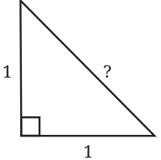
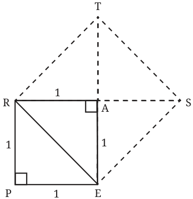
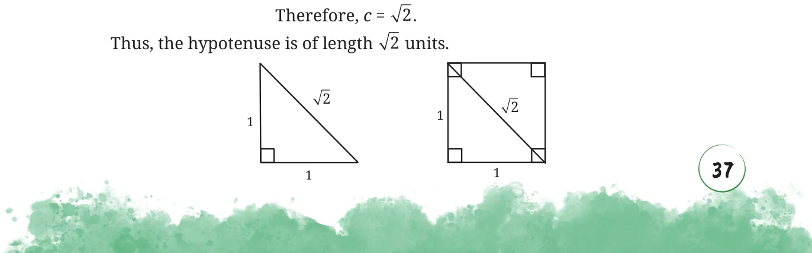

Recall that in a right triangle, the side opposite to the right angle is called the hypotenuse.

Find the hypotenuse of this isosceles right triangle. We know that a square of side 1 unit is made of two such isosceles right triangles. We also know that the square constructed on the diagonal of this square has twice the area of the original square.

We do not yet know the length of the hypotenuse, but we know the area of the square REST on it!
Area of \(REST = 2 \times\) Area of PEAR
\(= 2 \times 1 = 2\) sq. units.
We know the relation between the side and the area of a square. If c is the hypotenuse ER, then
Area of \(REST = c \times c = c\) .
So, \(= 2\).


In the rest of this chapter, we will assume that all the lengths are of a fixed unit unless specified otherwise.
What is the value of 2?